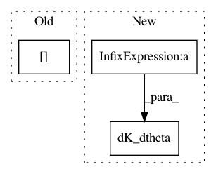

652b3ce2c6870a2357d537c4b87bfe3d300cbc66,GPy/kern/prod.py,prod,dK_dtheta,#prod#Any#Any#Any#Any#,61
Before Change
self.k2.dK_dtheta(dL_dK*K1, X, X2, k2_target)
target[:self.k1.Nparam] += k1_target
target[self.k1.Nparam:] += k2_target
def dK_dX(self,dL_dK,X,X2,target):
derivative of the covariance matrix with respect to X.
After Change
self.k2.dK_dtheta(dL_dK*self._K1, X[:,self.slice2], None, target[self.k1.Nparam:])
else:
self.k1.dK_dtheta(dL_dK*self._K2, X[:,self.slice1], X2[:,self.slice1], target[:self.k1.Nparam])
self.k2.dK_dtheta(dL_dK*self._K1, X[:,self.slice2], X2[:,self.slice2], target[self.k1.Nparam:])
def Kdiag(self,X,target):
Compute the diagonal of the covariance matrix associated to X.
target1 = np.zeros(X.shape[0])
In pattern: SUPERPATTERN
Frequency: 3
Non-data size: 3
Instances
Project Name: SheffieldML/GPy
Commit Name: 652b3ce2c6870a2357d537c4b87bfe3d300cbc66
Time: 2013-05-10
Author: n.durrande@sheffield.ac.uk
File Name: GPy/kern/prod.py
Class Name: prod
Method Name: dK_dtheta
Project Name: SheffieldML/GPy
Commit Name: ba84a43ea392c03234a04a851088da0d15a5a76d
Time: 2012-11-30
Author: james.hensman@gmail.com
File Name: GPy/models/sparse_GP_regression.py
Class Name: sparse_GP_regression
Method Name: dL_dtheta
Project Name: SheffieldML/GPy
Commit Name: d36ba011ef33102d9c9daf304c0d3565409a8fd7
Time: 2013-07-19
Author: james.hensman@gmail.com
File Name: GPy/kern/parts/linear.py
Class Name: Linear
Method Name: dpsi2_dtheta